Thermodynamics¶
Thermodynamic Potentials¶
We start by writing the internal energy
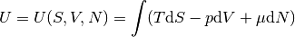
as a function of entropy  , volume 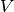 and a number of particles
, volume 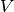 and a number of particles  . Now we
want to express it as a function of temperature
. Now we
want to express it as a function of temperature  , pressure 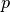 or a chemical
potential 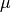, without losing any information, i.e. we still want to just
differentiate to obtain other quantities. In order to do that, we have to use
the Legendre transform. Including
, pressure 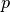 or a chemical
potential 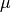, without losing any information, i.e. we still want to just
differentiate to obtain other quantities. In order to do that, we have to use
the Legendre transform. Including  , there are 8 possible combinations of
Legendre transforms that one can do (three of them are applying it to just one
variable, three of them to two variables, one to all three variables):
, there are 8 possible combinations of
Legendre transforms that one can do (three of them are applying it to just one
variable, three of them to two variables, one to all three variables):
![U = U(S, V, N) = \int (T\d S - p \d V + \mu \d N)
F = F(T, V, N) = U - TS = \int (-S\d T - p \d V + \mu \d N)
H = H(S, p, N) = U + pV = \int (T\d S + V \d p + \mu \d N)
X_1 = X_1(S, V, \mu) = U - \mu N = \int (T\d S - p \d V - N \d \mu)
G = G(T, p, N) = U - TS + pV = \int (-S\d T + V \d p + \mu \d N)
\Omega = \Omega(T, V, \mu) = U-TS-\mu N = \int (-S\d T - p \d V - N \d \mu)
X_2 = X_2(S, p, \mu) = U + pV-\mu N = \int (T\d S + V \d p - N \d \mu)
X_3 = X_3(T, p, \mu) = U-TS+pV-\mu N = \int (-S\d T + V \d p - N \d \mu)](../_images/math/8c38e5534910597b9d982cfcb8b3937e74e3989a.png)
Of these, is the internal energy,  is the Helmholtz free energy,
is the Helmholtz free energy,  is
the enthalpy,
is
the enthalpy,  is the Gibbs free energy, is the grand potential
(sometimes also called a Landau potential). The unnamed potentials are simply
labeled 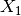, 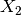 and 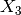. The is sometimes called a null function.
is the Gibbs free energy, is the grand potential
(sometimes also called a Landau potential). The unnamed potentials are simply
labeled 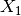, 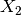 and 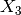. The is sometimes called a null function.
From the differentials, we can then read off the derivatives (and what other variables are constant), here are all the combinations:
![T = \left(\partial U \over \partial S\right)_{V, N}
= \left(\partial H \over \partial S\right)_{p, N}
= \left(\partial X_1 \over \partial S\right)_{V, \mu}
= \left(\partial X_2 \over \partial S\right)_{p, \mu}
S = -\left(\partial F \over \partial T\right)_{V, N}
= -\left(\partial G \over \partial T\right)_{p, N}
= -\left(\partial \Omega \over \partial T\right)_{V, \mu}
= -\left(\partial X_3 \over \partial T\right)_{p, \mu}
p = -\left(\partial U \over \partial V\right)_{S, N}
= -\left(\partial F \over \partial V\right)_{T, N}
= -\left(\partial X_1 \over \partial V\right)_{S, \mu}
= -\left(\partial \Omega \over \partial V\right)_{T, \mu}
V = \left(\partial H \over \partial p\right)_{S, N}
= \left(\partial G \over \partial p\right)_{T, N}
= \left(\partial X_2 \over \partial p\right)_{S, \mu}
= \left(\partial X_3 \over \partial p\right)_{T, \mu}
\mu = \left(\partial U \over \partial N\right)_{S, V}
= \left(\partial F \over \partial N\right)_{T, V}
= \left(\partial H \over \partial N\right)_{S, p}
= \left(\partial G \over \partial N\right)_{T, p}
N = -\left(\partial X_1 \over \partial \mu\right)_{S, V}
= -\left(\partial \Omega \over \partial \mu\right)_{T, V}
= -\left(\partial X_2 \over \partial \mu\right)_{S, p}
= -\left(\partial X_3 \over \partial \mu\right)_{T, p}](../_images/math/474576e746979b07acf903b1d7ab808af4907381.png)
A large system is defined as: if the number of particles is made  times as large, , , and all become times larger. In other
words, the internal energy of a large system is a homogeneous function of ,
, and of order one:
times as large, , , and all become times larger. In other
words, the internal energy of a large system is a homogeneous function of ,
, and of order one:
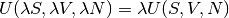
Now we can apply the Euler’s theorem (see Homogeneous Functions (Euler’s Theorem)):
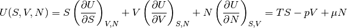
And from the definitions of all the potentials we can calculate their forms for large systems:
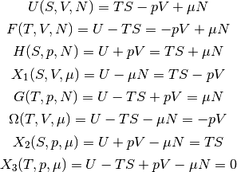
Examples¶
Ideal Gas¶
The internal energy as a function of , and is equal to:
(1)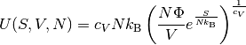
where 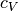 is the heat capacity at a constant volume ( for monoatomic gases, for diatomic gases), 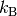 is the Boltzman constant and is a constant that may vary for different gases, but it is independent of the thermodynamic state of the gas.
At this level, the above expression is simply given. We would have to use statistical physics in order to calculate any of the thermodynamic potentials.
Now we calculate the free energy 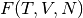. First we must calculate the
temperature :
(2)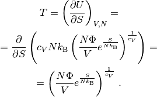
In order to calculate the the free energy, we must use (2) to
eliminate :
(3)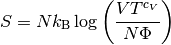
and then express as a function of , and only:
(4)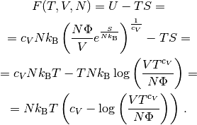
This calculation shows that one can also express the internal energy as a
function of , and as 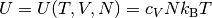. This
is a valid expression, but unlike 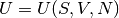, this is not a thermodynamic
potential, because we lost some information. In particular, if we use 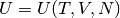 to find :
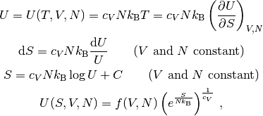
we can see, that we recovered the correct formula for 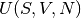 except an
arbitrary function 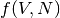 of and . Compared to (1) we
can see that it must be 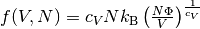, but this information got lost. For this reason, only
as well as 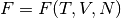, that we just calculated, are
thermodynamic potentials and both contain equivalent information. But is not and it does not contain full information.
To convert back to , we first calculate the entropy
:
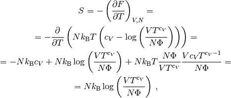
which is the same equation as (3). From this, we express , we
get (2). Finally, we can calculate the internal energy and
substitute for using (2):

This is the same equation as (1). This shows that all thermodynamic potentials contain the same information and can be converted to one another using the Legendre transformation.
Note: in equations like 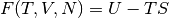, we can use any expressions for
and (e.g. we can use  or 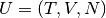, etc.) in the
intermediate steps, but at the end, we must express the final formula using
, and only.
or 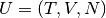, etc.) in the
intermediate steps, but at the end, we must express the final formula using
, and only.
To calculate the Gibbs energy, we need to calculate pressure first. We can use
any of the potentials , , or to do so. Since the equation
of state is typicaly expressed as 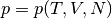, then the free energy is the natural choice:
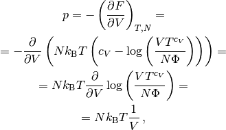
and we get the ideal gas law 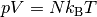. The Gibbs energy is equal to:
(5)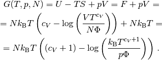
For the enthalpy, we first need:
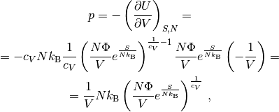
we need to use this to express the volume :
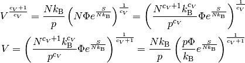
now we can calculate 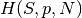:
(6)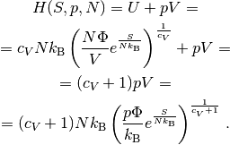
The enthalpy in terms of temperature 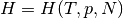 can be calculated as:
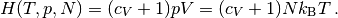
The specific heat capacity at a constant volume can be calculated as:
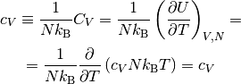
This provides proof that the in (1) is indeed the specific heat capacity at a constant volume.
The specific heat capacity at a constant pressure can be calculated as:
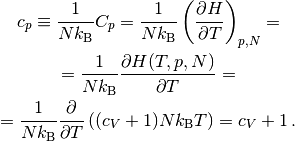
Using this relation 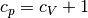 we can then express (5):
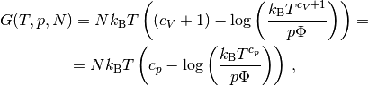
and (6) as:
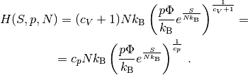
In order to calculate the grand potential, we first need to find the chemical potential:
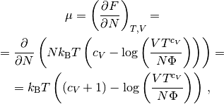
and express using :

Now we can calculate 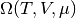:
(7)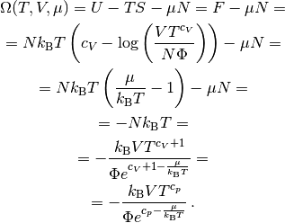